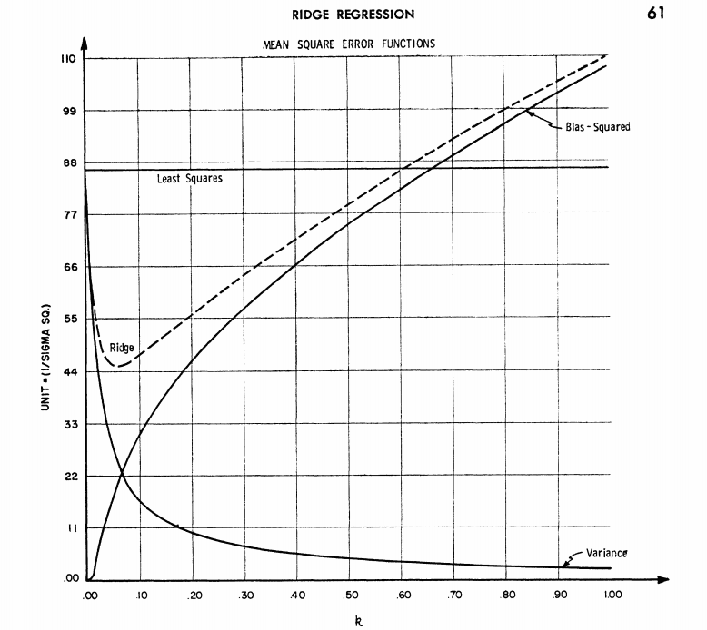

We saw in our discussion of prediction that there exist cases in which "regularized" models can yield better predictions than unregularized models. The most common use of regularization in statistics is to perform model selection by penalizing models with extreme parameter values. We will discuss in this section the most common regularization approaches in linear regression problems: Ridge and Lasso.
Consider the standard linear model described by $E(Y) = X \beta$, but suppose that we are in a situation where the number of observations, $n$, is less than the number of parameters, $p$. In this case, the OLS estimate for $\hat{\beta}_{OLS} = (X^TX)^{-1}X^TY$ is not well defined since $X^TX$ will have rank at most $n < p$, and is thus not invertible . We must thus week alternative methods for estimating $\beta$, such as ridge regression.
The Gauss-Markov theorem tells us that for the following linear model
$$y_i = x_i^T \beta + \epsilon_i,$$
the OLS estimate, $\hat{\beta}_{OLS}$, of $\beta$ is BLUE (Best Linear Unbiased Estimate), that is, the OLS estimate is unbiased and achieves the lowest variance amongst all possible unbiased estimates. However, it turns out that in many situations, there exist biased estimators with lower variance than the unbiased OLS estimator. Recall that
$$MSE = Bias^2 + Variance$$
If we can find a new estimator that has a little bit of bias but significantly less variance, then it is possible that the estimator will have lower MSE than the unbiased estimator (recall the bias/variance tradeoff).
Let's define a modified OLS estimator, called the ridge regression estimator, by
$$\hat{\beta}^* = \left(X^TX + kI\right)^{-1}X^TY = \left(I + k(X^TX)^{-1}\right)^{-1}\hat{\beta}_{OLS}$$
Notice that as we move $k$ towards $0$, $\hat{\beta}^*$ approaches the OLS estimator, but moving $k$ away from $0$ yields an estimator that differs from $\hat{\beta}_{OLS}$ in the sense that it shrinks it towards $0$. This is one of the important properties of ridge regression:
Ridge regression shrinks the model parameters (coefficients) towards zero, where the amount of shrinkage depends on the size of the regularization parameter, $k$
It turns out that although our new estimator, $\hat{\beta}^*$, is no longer unbiased, it has lower variance than $\hat{\beta}_{OLS}$.

An alternative, yet more common formulation of the ridge regression estimate of $\beta$ which focuses on adding a penalty for models with large $\beta$ values is given by
$$\hat{\beta}^* = \underset{\beta}{\text{argmin}}\left[ \sum_{i=1}^n (y_i - x_i^T \beta)^2 + k \sum_{j = 1}^p \beta^2\right]$$
This formulation yields the estimator presented above which we can write as
$$\hat{\beta}^* = Z \hat{\beta}_{OLS}$$
where $Z = (I + k(X^TX)^{-1})^{-1}$.
It is easy to show that $\hat{\beta}^*$ is unbiased ($E\left(\hat{\beta}^*\right) = E(Z \hat{\beta}_{OLS}) = Z\beta \neq \beta$), however the steps to calculate the variance of the ridge estimator, are a bit more involved (see the Appendix). Some fun algebraic steps show that
$$Var\left(\hat{\beta}^*\right) = \sigma^2 \sum_{j=1}^p \frac{\lambda_j}{(\lambda_j + k)^2}$$
where $\lambda_1, ..., \lambda_p$ are the eigenvalues of $X^TX$. From the above expression, it is clear that increasing the regularization parameter, $k$, decreases the variance of our ridge estimator.
Further, we can show that if the eigenvalue decomposition of $X^TX$ is given by $X^TX = P^T \Lambda P$ where $P$ consists of the eigenvectors of $X^TX$ and $\Lambda$ is a diagonal matrix whose entries are the eigenvalues of $X^TX$, then
$$Bias^2\left(\hat{\beta}^*\right) = \sum_{j=1}^p \frac{\alpha_j^2}{\left( 1 + \frac{\lambda_j}{k} \right)^2 }$$
where $\alpha_j = \beta^T P_j$, implying that increasing $k$ increases the bias of our ridge estimator.
It can be shown that the ridge regression estimator actually achieves lower MSE than the OLS estimator even in the traditional setting of $n > p$. However, the extent of the improvement in MSE depends on the value of $k$. In the appendix, it is shown that the values of $k$ for which the variance is rapidly decreasing while bias is only slightly increasing (i.e. the MSE as a function of $k$ is negative), are those such that
$$k < \frac{\sigma^2}{\max_i(\alpha_j^2)}$$
To vaguely understand why, recall the Figure above (in which the MSE of the ridge estimator corresponds to the dotted line). The region specified corresponds to the values of $k$ for which the ridge MSE is rapidly decreasing (and is clearly less than the MSE for OLS).
Supposing that we can express the ridge estimate as $\hat{\beta}^* = X^T\hat{\alpha}$ for some $\hat{\alpha} \in \mathbb{R}^n$, i.e. that the solution lies within the span of the rows of $X$ (we encourage you, the reader, to show that this is true as an exercise), calculation of the ridge estimate can be reformulated as solving for $\alpha$ rather than $\beta$, i.e. instead of solving $\hat{\beta}^* = \underset{\beta}{\text{argmin}}\left( \|Y - X \beta\|_2^2 + k\|\beta\|_2^2\right)$ (the standard approach), we solve the following optimization problem over $\alpha$:
$$\hat{\alpha} = \underset{\alpha}{\text{argmin}} \left( \|Y - XX^T \alpha\|_2^2 + k \|X^T \alpha\|_2^2\right)$$
and then plug the evaluated $\hat{\alpha}$ into $\hat{\beta}^* = X^T \hat{\alpha}$ to obtain our ridge estimate.
At this point, you might be wondering why this is an improvement. The crucial difference between the original optimization problem and its reformulation is that finding the optimal $\alpha$ will involve inverting an $n \times n$ matrix instead of a $p \times p$ matrix, which, when $p \gg n$, is a significant improvement. That is, it is much simpler to calculate the ridge estimate than the OLS estimate for high-dimensional problems, particularly when we have more parameters than observations.
To calculate $\hat{\alpha}$, we want to find $\alpha$ such that
$$\frac{d}{d\alpha} \left( \| y - X X^T \alpha \|_2^2 + k \| X^T \alpha \|_2^2 \right) = 0$$
Let's define $M := XX^T$. Then since $\|A\|_2^2 = A^TA$, we have that
\begin{aligned} \| y - X X^T \alpha \|_2^2 + k \| X^T \alpha \|_2^2 &= (y - M\alpha)^T(y - M \alpha) + k \alpha^TM \alpha\\ & = y^Ty - y^TM \alpha - \alpha^T M y + \alpha^TM^TM\alpha + k \alpha^TM\alpha \end{aligned}
so that differentiating with respect to $\alpha$ and setting the result to zero, we need to solve
$$-2My + 2M^2 \alpha + 2kM\alpha = 0$$
i.e.
$$M(M + I k) \alpha = My$$
where if $p > n$, then $M$ is invertible if it is full rank (note that in this situation, $X^TX$ is not invertible!), and we thus have that
$$\hat{\alpha} = (M + Ik)^{-1} y$$
from which (using the identity $(I + AB)^{-1}A = A(I + BA)^{-1}$) we can calculate our ridge estimate as
$$\hat{\beta}^* = X^T \hat{\alpha} = X^T (XX^T + Ik)^{-1}y = (X^TX + Ik)^{-1} X^Ty$$
which is the same as the estimate that we calculated above.
The Mean Squared Error (MSE) as a function of $k$ can be written as
\begin{aligned} MSE(k) & = E \left[ \left(\hat{\beta}^* - \beta\right)^T\left(\hat{\beta}^* - \beta\right) \right]\\ & = E \left[ \left(\hat{\beta}^* - Z\beta + Z\beta - \beta\right)^T\left(\hat{\beta}^* - Z\beta + Z\beta - \beta\right) \right]\\ & = E \left[ \left(Z\hat{\beta}_{OLS} - Z\beta + Z\beta - \beta\right)^T\left(Z\hat{\beta}_{OLS} - Z\beta + Z\beta - \beta\right) \right]\\ & = E\left[ \left(\hat{\beta}_{OLS} - \beta \right)^T Z^TZ \left( \hat{\beta}_{OLS} - \beta \right) \right] + (Z\beta - \beta)^T(Z\beta - \beta) \end{aligned}
where the last step followed from the unbiasedness of $\hat{\beta}_{OLS}$ (i.e. that $E(\hat{\beta}_{OLS} - \beta) = 0$) implying that the cross-terms disappear.
Next, the above equation is of the form
$$MSE(k) = Var\left( \hat{\beta}^* \right) + Bias\left(\hat{\beta}^*\right)^2$$
where, since $E\left( \hat{\beta}^*\right ) = Z \beta$, we have that
\begin{aligned} Var\left(\hat{\beta}^*\right) &= E\left[ \left( \hat{\beta}^* - E \left(\hat{\beta}^*\right) \right)^T\left( \hat{\beta}^* - E \left(\hat{\beta}^*\right) \right) \right]\\ & = E \left[ \left(\hat{\beta}^* - Z \beta\right)^T\left(\hat{\beta}^* - Z \beta\right) \right]\\ & = E\left[ \left( \hat{\beta}_{OLS} - \beta \right)^TZ^T Z\left( \hat{\beta}_{OLS} - \beta \right) \right] \end{aligned}
and
\begin{aligned} Bias^2\left(\hat{\beta}^*\right) &= \left(E(\hat{\beta}^*) - \beta \right)^T\left(E(\hat{\beta}^*) - \beta \right)\\ & = (Z \beta - \beta)^T (Z \beta - \beta) \end{aligned}
Suppose that $X^TX$ has eigenvalues $\lambda_1, ..., \lambda_p$, then
\begin{aligned} Var\left(\hat{\beta}_{OLS}\right) &= E\left(\hat{\beta}_{OLS} - \beta\right)^T\left(\hat{\beta}_{OLS} - \beta\right)\\ & = Etr\left(\hat{\beta}_{OLS} - \beta\right)^T\left(\hat{\beta}_{OLS} - \beta\right)\\ & = \sigma^2 tr(X^TX)^{-1}\\ & = \sigma^2 \sum_{j=1}^p \frac{1}{\lambda_j} \end{aligned}
Note that $Z = \left(I + k(X^TX)^{-1}\right)^{-1}$ has eigenvalues $\gamma_i = \frac{\lambda_i}{\lambda_i + k}$, so that
$$Var\left(\hat{\beta}^*\right) = \sigma^2 \sum_{j=1}^p \frac{\lambda_j}{(\lambda_k + k)^2}$$
The values of $k$ for which the variance is rapidly decreasing while bias is only slightly increasing (i.e. the MSE as a function of $k$ is negative), are those such that
$$k < \frac{\sigma^2}{\max_i(\alpha_j^2)}$$
To understand why, recall the Figure above (in which the MSE of the ridge estimator corresponds to the dotted line). We need to show that the region specified corresponds to the $k > 0$, such that
$$\frac{d}{dk} MSE(k) < 0$$
i.e. the values of $k$ that fall into the region in which the variance is rapidly decreasing while bias is only slightly decreasing. Note that since
$$MSE\left(\hat{\beta}^*\right) - Var(k) + Bias^2(k)$$
we simply need to find sufficient conditions for
$$\frac{d}{dk}( Var(k) + Bias^2(k)) < 0$$
where $Var(k) = \sigma^2 \sum_{j=1}^p \frac{\lambda_j}{(\lambda_j + k)^2}$ and $Bias^2(k) = \sum_{j=1}^p \frac{\alpha_j^2}{\left( 1 + \frac{\lambda_j}{k} \right)^2 }$. Thus
$$\frac{d}{dk} Var(k) = -2 \sigma^2 \sum_{j=1}^p \frac{\lambda_j}{(\lambda_j + k)^3}$$
and
$$\frac{d}{dk} Bias^2(k) = 2k\sum_{j=1}^p \frac{\lambda_j \alpha_j^2}{(\lambda_j + k)^3}$$
so that we need for each $j$
$$2 \sigma^2 \lambda_j > 2k \lambda_j \alpha_j^2$$
which implies that a sufficient condition for the existence of such a $k$ is given by
$$k < \frac{\sigma^2}{\max_i (\alpha_j^2)}$$